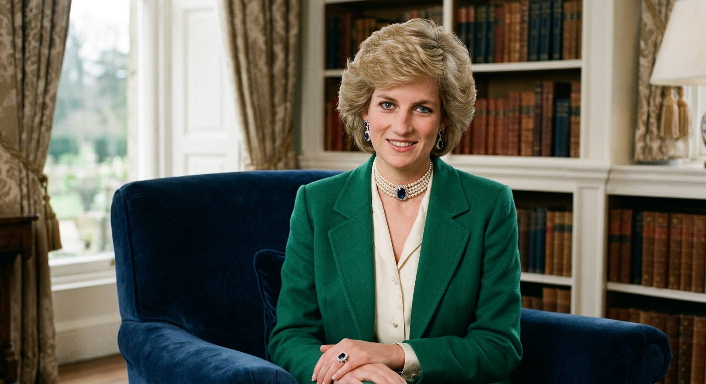

Principais Feitos e Legado
Por Joice
biografia
Nasceu em Sandringham, no Reino Unido, em 1 de julho de 1961, com o nome de Diana Frances Spencer.Cresceu em uma família nobre e aristocrática, sendo a filha mais nova de Edward John Spencer.Seus pais se divorciaram quando ela tinha oito anos de idade.Tornou-se Lady Diana Spencer em 1975, após seu pai herdar o título de conde. Casamento e RealezaCasou-se com o príncipe Charles em 29 de julho de 1981, na Catedral de São Paulo, em Londres.O casal teve dois filhos: o príncipe William e o príncipe Harry.O casamento enfrentou graves crises públicas devido a incompatibilidades e infidelidades.O divórcio oficial do casal foi finalizado em 1996

Nas primeiras horas de 31 de agosto de 1997, Diana, Princesa de Gales, faleceu em um hospital de Paris, França, após ser gravemente ferida em um acidente de carro em um túnel rodoviário na mesma cidade. Seu namorado, Dodi Al-Fayed, e o motorista do Mercedes-Benz W140, Henri Paul, foram declarados mortos no local. Seu guarda-costas, Trevor Rees-Jones, sobreviveu com ferimentos graves. Alguns meios de comunicação alegaram que o comportamento errático dos paparazzi seguindo o carro, conforme relatado pela BBC, contribuiu para o acidente.Em 1999, uma investigação francesa descobriu que Paul, que perdeu o controle do veículo em alta velocidade enquanto estava intoxicado por álcool e sob os efeitos de medicamentos prescritos, foi o único responsável pelo acidente. Ele era o vice-chefe da segurança do Hôtel Ritz e já havia instigado os paparazzi que esperavam por Diana e Al-Fayed do lado de fora do hotel.[2] Antidepressivos e traços de um antipsicótico em seu sangue podem ter piorado a embriaguez de Paul.[3] Em 2008, o júri de um inquérito britânico retornou um veredicto de homicídio ilegal pela negligência do motorista e os paparazzi por seguirem o veículo.[4] Os primeiros relatos da mídia afirmavam que Rees-Jones sobreviveu porque estava usando cinto de segurança, mas outras investigações revelaram que nenhum dos ocupantes do carro estava usando cinto de segurança.[5] Diana tinha 36 anos na data de seu falecimento.[6] Sua morte causou uma onda de luto público sem precedentes no Reino Unido e no mundo todo, e seu funeral foi assistido por cerca de 2,5 bilhões de pessoas. A família real britânica foi criticada na imprensa por sua reação à morte de Diana. O interesse público por Diana permaneceu alto e ela manteve a cobertura regular da imprensa nos anos após sua morte.